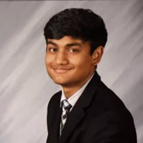
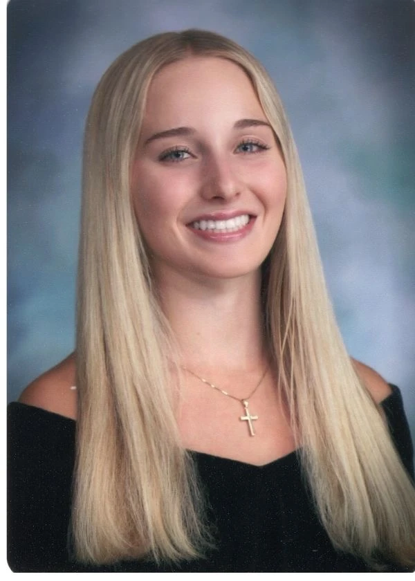

Meet the team
Roman Aytur
President
Read bio
Theodore Bong
Founding Engineer
Read bio

Rudra Patel
Founding Engineer
Read bio
Andrew Tijerino
VP, Unhoused Operations
Read bio
Knox Weggler
Director of Marketing
Read bio

Alexandria Taylor
Operations
Thank you to our volunteers
Our street outreach and research happen because volunteers give their time. Reach Out started
with a group of high school students who decided to show up, and that is still how the work gets
done. To everyone who has joined us along the way: thank you.
If you’d like to help, we’d be glad to have you. Every volunteer opportunity, from cleanups to surveying, is on civfix.
×
President
Roman Aytur
Roman founded the organization while in high school with the mission of combating rampant homelessness in Los Angeles through the use of technology and cooperation with local governments. Roman has extensive experience working alongside nonprofits through his volunteer work at the St. Francis Center.
He also led the campaign for unhoused representation in the Los Angeles City Charter reform, partnering with Rewrite LA to include unhoused Angelenos in civic assemblies. His work with The California Endowment and the Matt Mahan for Governor campaign has opened the door for new legislation to make the lives of all Californians better.
Roman saw a dire need for a more transparent, efficient way to organize cleanups and connect residents with their local governments about the issues affecting their communities. He pitched the idea for civfix, raised funds and recruited the engineering team, bringing the project to life.
Email Roman
×
Founding Engineer
Theodore Bong
Theo is studying physics at UC Berkeley. He is an experienced programmer who has worked on web and video game projects for more than six years.
Focused on software design and user experience, Theo manages front-end software for the civfix app and information technology for Reach Out LA.
Email Theo
×
Founding Engineer
Rudra Patel
Rudra is a computer science student on a full-ride academic scholarship at the University of Kentucky. He is a software engineer with more than eight years of experience, publishing programs downloaded by more than 40,000 people and developing for video game communities with millions of unique players.
Rudra manages the infrastructure, back-end software and DevOps workflows behind the civfix app, along with information technology for Reach Out LA.
Email Rudra
×
VP, Unhoused Operations
Andrew Tijerino
Andrew is vice president of unhoused operations and a co-founder of Reach Out LA, where he has helped bring our homeless outreach in Los Angeles to life, from building the organization’s website to creating voter registration materials for unhoused individuals.
He also served as a moderator for the LA City Charter Civic Assembly, part of the city’s first major charter overhaul in more than 25 years. There, he recruited unhoused delegates to take part in the assembly and facilitated small-group discussions to help make sure their voices shaped the city’s governing document.
He studies computer science at UC Irvine. When he’s not coding or writing, he’s channeling that same care for people into work like this.
Email Andrew
×
Director of Marketing
Knox Weggler
Knox is Reach Out LA’s director of marketing. An experienced video director with an emphasis on music and film, he brings that eye for storytelling to how we share our work.
He is a senior at St. Monica Prep and has been committed to community service his whole life.